Dialog
Usage
Use a dialog to communicate critical information that requires input or action. A dialog can be used to validate user decisions, confirm non-destructive or destructive actions, report errors, share task results and statuses, and prompt required user input. A dialog is also interruptive by design. When active, users are blocked from viewing page content and cannot return to their workflow until the dialog task is complete or the dialog is dismissed. A dialog can be effective when used correctly, but it should be used sparingly to limit disruption.
When to use a dialog
A dialog is commonly used for short tasks. If users need to perform a task several times on the same page, consider moving it to the main page instead. Do not use a dialog unless the information or task within is vital to user success and worth disrupting their workflow.
Sizes
There are two dialog container sizes. Choose a size that works best for the amount of available content.
Fixed-width
The fixed-width dialog container works well for environments with a fixed grid, like marketing pages.
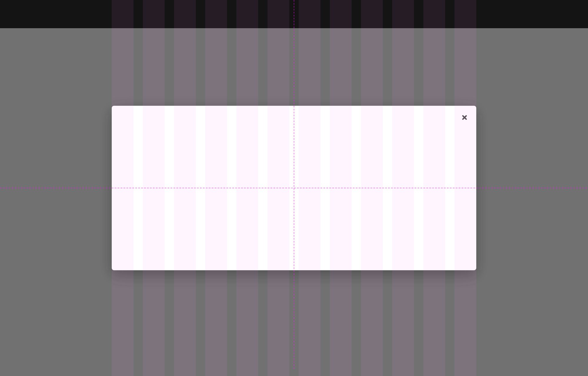
Full-width
The full-width dialog container works well for environments with a more fluid grid like apps or dashboards.
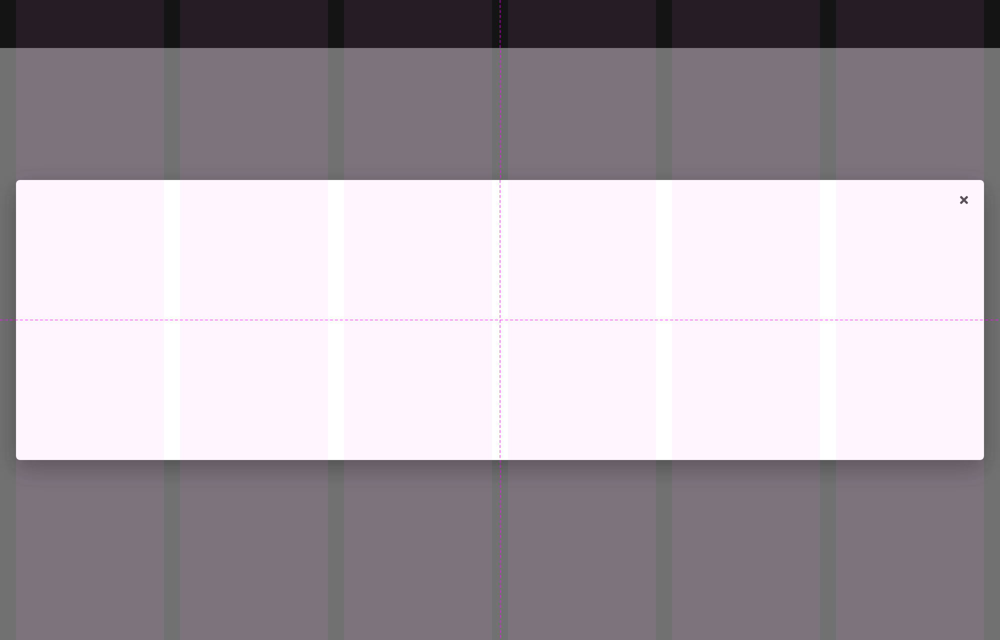
Variants
There are three available dialog variants depending on the intended function.
Confirmation
Use a confirmation dialog to validate user decisions and communicate their consequences. Confirmation dialogs can confirm non-destructive and destructive actions. When confirming a non-destructive action, do the following:
- Use a primary button to confirm a non-destructive action
- Be specific about what will happen when an action is confirmed
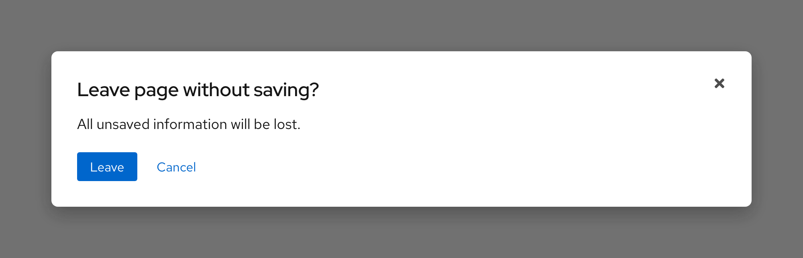
When confirming a destructive action, do the following.
- Use a primary button again or if the action carries serious consequences, use a danger button instead
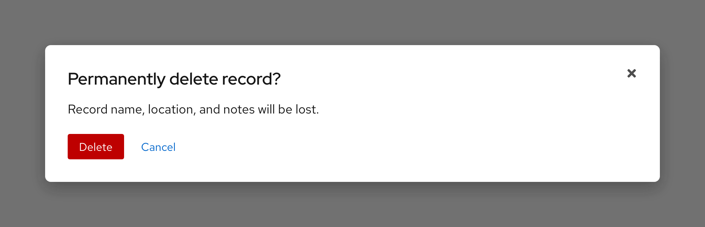
Error
Use an error dialog to inform users of problems that interrupt normal or expected behavior. Briefly contextualize the problem, explain why it happened, and then provide actionable steps toward a solution.
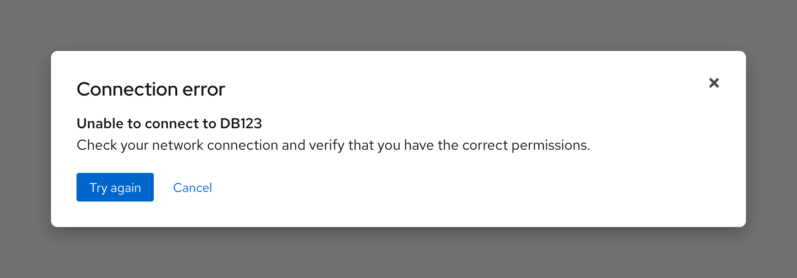
Passive
Use a passive dialog to communicate critical and immediately relevant information like the status of an application or the result of an action. When using a passive dialog, consider the following:
- Passive dialog content should require or lead to user action
- A passive dialog can also notify users about the status or duration of a critical process
- Never use a passive dialog for non-critical information, use an inline alert or toast alert instead
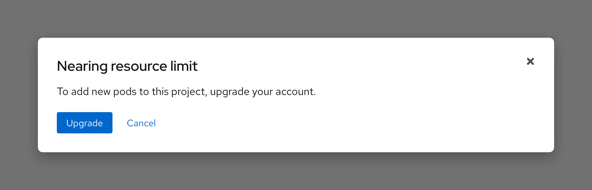
Video player dialog
A video can replace a fixed-width dialog container, it should have the same width and include a close button.
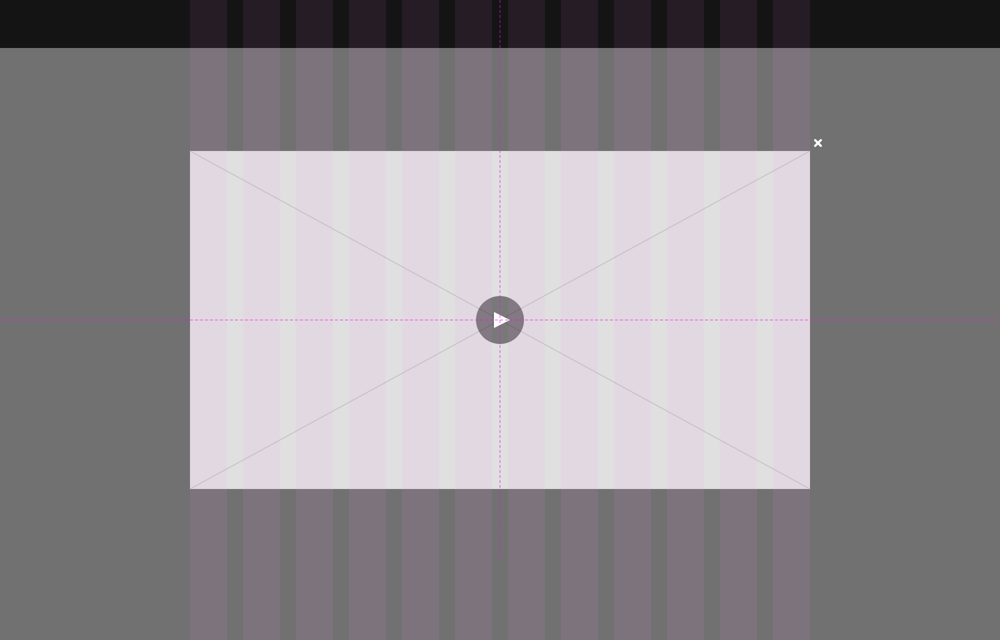
Writing content
Dialog content should be descriptive and specific so users can scan, understand the context of an action, and make a quick decision. A dialog includes three main content sections.
Headline
A headline introduces the purpose of a dialog, sometimes as a question. Use important key words like permanently to describe an action and its consequences.
Body text
Body text provides additional information about the consequence of an action in three lines or less, typically concerning changes to a workflow or access to information. Be mindful of adding interactive elements that would navigate users away from a dialog unless they are crucial yet helpful resources like documentation.
Buttons
Buttons allow users to answer the headline prompt. Write button text labels as verbs to communicate their function and consequence. Button verbs can be pulled from the headline for better scannability.
Character and line counts
| Element | Character count | Line count |
|---|---|---|
| Title text | 40 | 1 |
| Body text | 175 | 2 |
| Button text | 20 | 1 |
Overflow content
When dialog content is taller than the dialog container height, the body section should scroll vertically with the header and footer remaining fixed in place. The content should visibly fade at the end of the dialog body section to indicate there is additional content out of view. Dialog content should never scroll horizontally.
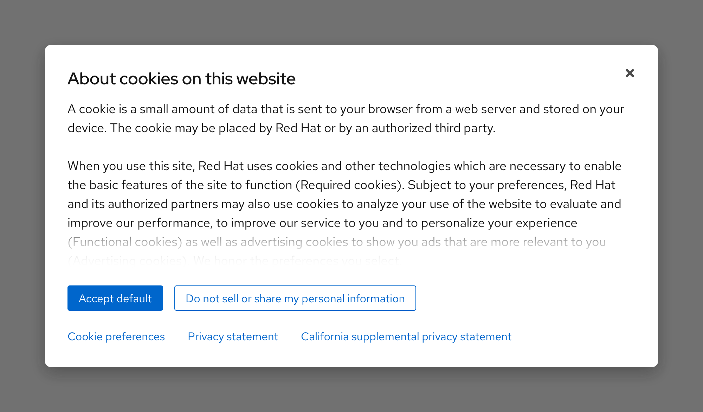
Layout
Placement
By default, a dialog container is horizontally and vertically centered on top of the backdrop and viewport.
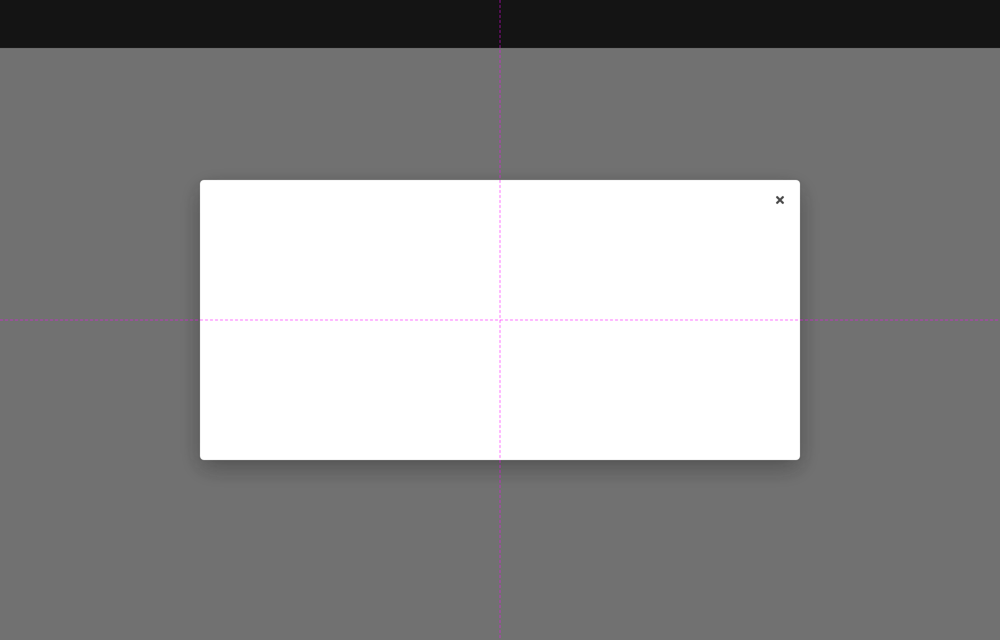
By default, a dialog container is horizontally and vertically centered on top of the backdrop and viewport.
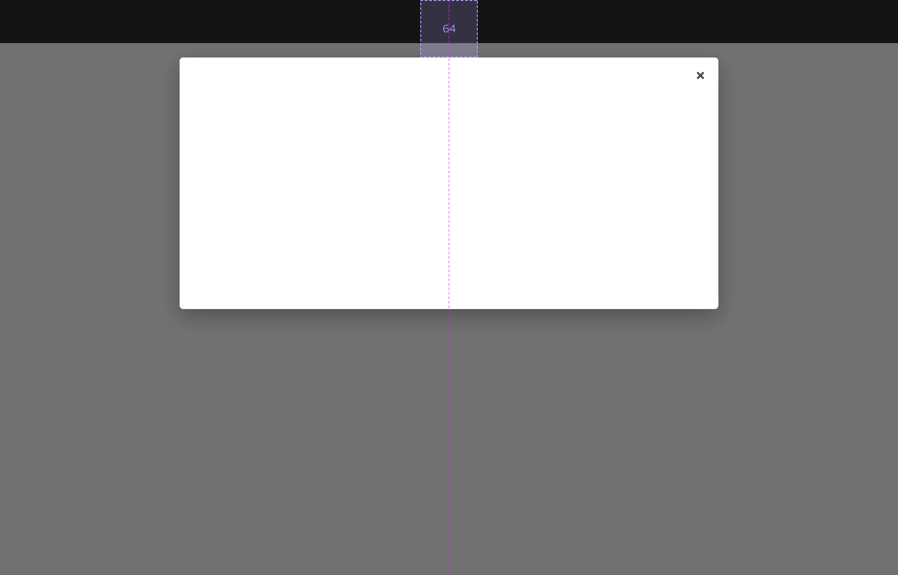
Responsive design
Large breakpoints
Both the fixed-width and full-width dialog containers can be used on large breakpoints.
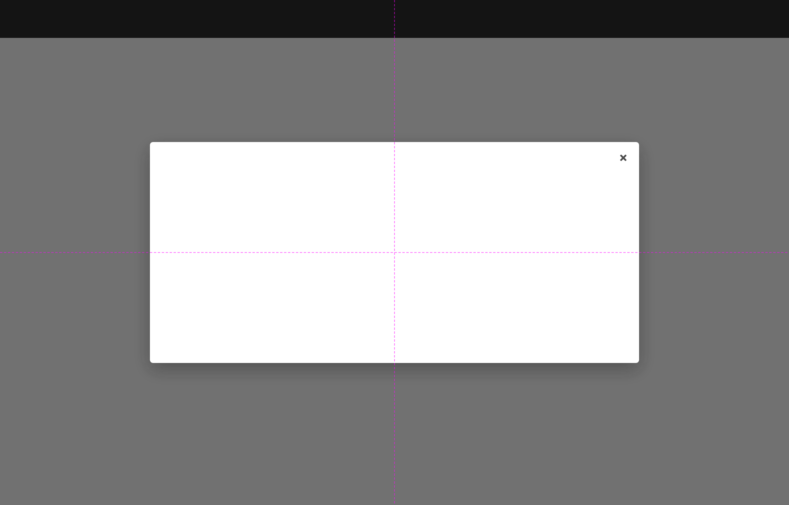
Small breakpoints
As breakpoints get smaller, the fixed-width dialog container will change to full-width and become taller.
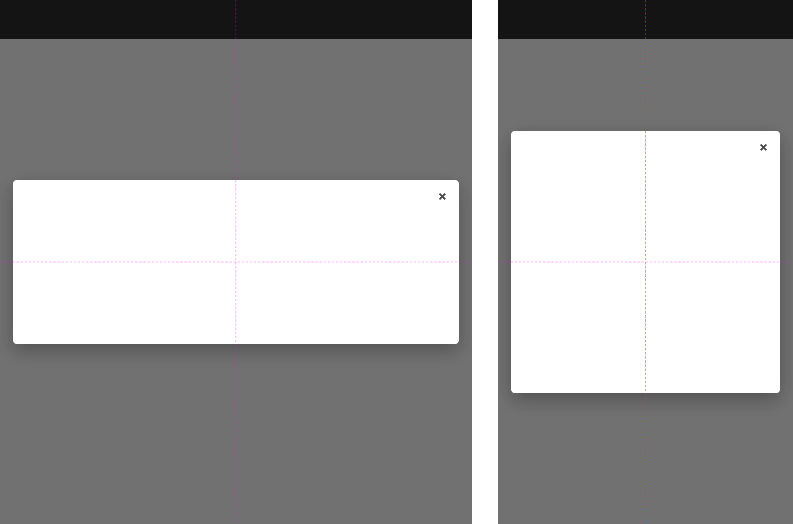
Best practices
Adding to read time
Do not add elements that will make users spend more time reading a dialog, move them to the main page instead. A dialog is disruptive, so it is important to bring users back to their original workflow as quickly as possible.

Unclear context
Make sure to write clearly about what will happen when users confirm a specific action.

Two many buttons
Do not use more than two buttons in a dialog and do not add or change button variants.

Related elements or patterns
Feedback
To give feedback about anything on this page, contact us.
Red Hat legal and privacy links
- About Red Hat
- Jobs
- Events
- Locations
- Contact Red Hat
- Red Hat Blog
- Diversity, equity, and inclusion
- Cool Stuff Store
- Red Hat Summit
Red Hat legal and privacy links